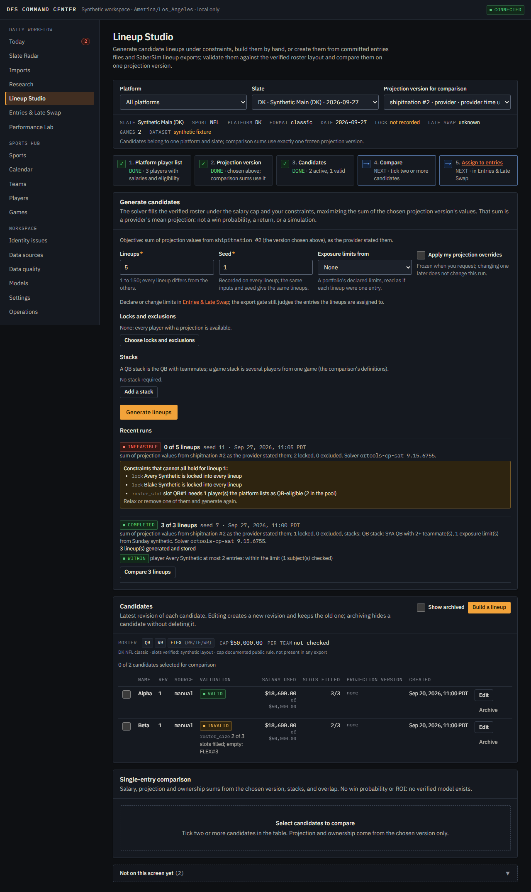

- Status
- In daily use
- Repository
- Private
- Deployed
- No public instance. A personal tool
- Stack
- Python 3.12, FastAPI, SQLAlchemy, Celery, Polars, SciPy · React 19, TanStack Query, Tailwind 4 · Docker Compose, Prometheus
DFS Command Center In daily use
A research and portfolio workbench for daily fantasy sports on DraftKings and FanDuel. It consolidates provider exports, public sports data, projections, lineup construction, contest evaluation and results into one audited record.
I built it for myself, which means it gets used every slate. It imports the platforms' real export files (parsers verified against the actual downloads), ingests schedules, rosters, game logs and injury reports from public sources behind a licensing gate, generates lineups under constraints, and reconciles what was actually entered against what the plan said.
What it refuses to do: it never enters a contest or moves money, nothing in it says "profitable", and a feature that isn't ready shows an explicit unavailable state instead of a placeholder that looks real.


- Constraint solving with OR-Tools CP-SAT, portfolio optimization with HiGHS
- Monte Carlo contest evaluation with uncertainty reported apart
- Bitemporal rosters, append-only game logs, a reviewed identity queue
- Fourteen export gates, every input fingerprinted and re-checked